NBA历史
NBA是National Basketball Association的缩写（国家篮球协会）。成立于1946年6月6日。成立时叫BAA，即全美篮协会（Basketball Association of America）,是由十一家冰球馆和体育馆的老板为了让体育馆在冰球比赛以外的时间，不至于闲置而共同发起成立的。BAA成立时共11支球队：纽约尼克斯队、波士顿凯尔特人队、华盛顿国会队、芝加哥牡鹿队、克利夫兰叛逆者队、底特律猎鹰队、费城武士队、匹兹保铁人队、普罗维登斯蒸气队、圣路易斯轰炸机队和多伦多爱斯基摩人队。1949年BAA吞并了当时的另外一个联盟（NBL），并改名为NBA。1949-50赛季，NBA共17支球队。1976年NBA吞并了美国篮球协会（ABA），球队增加到22支。1980年达拉斯小牛队加入NBA。1988年，夏洛特黄蜂队和迈阿密热火队加入NBA。1990年奥兰多魔术队和明尼苏达森林狼队加入NBA。1995年两支加拿大球队加入NBA，多伦多猛龙队和温哥华灰熊队，使NBA的球队达到29支.2004年，夏洛特山猫队加盟NBA，是球队总数达到了30。
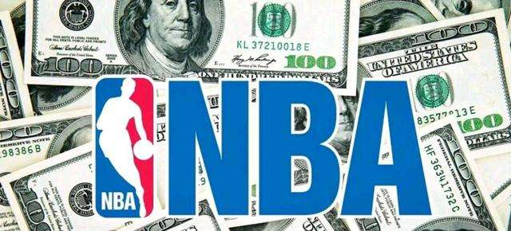
NBA的由来
1891年，美国人詹姆士・奈什密斯博士在麻省的春田学院，为了给学生们找一个冬季体育锻炼的方式，在1891年用2只破筐和一只代用的足球创造了篮球运动，这才有了今天如火如荼的NBA。而NBA在1946年6月6日诞生时，有一个我们陌生的名字BAA。
NBA的出现和发展是篮球运动前五十年积累和沉淀。自从1891年，篮球运动被詹姆士・奈什密斯博士发明之后，1898年，美国新泽西州特伦顿的一支球队用25美元租用了当地一家礼堂比赛并向观众售票。在赛后的分红中队长库珀组织比赛有功，首先领到了1美元。这场“有偿篮球赛”被不列颠大百科全书认定为第一场“职业篮球赛”。
特伦顿比赛之后，“有偿比赛”在全美迅速展开。为了保护参加“有偿比赛”选手的利益， 1898年各地的球队成立了第一个职业篮球组织--“国家联盟”（NBL）。由于各球队经济实力和技术水平相差甚远，加上没有成熟的市场运作经验和规则，NBL仅仅经过三四个赛季便名存实亡了。30年代，NBL在一些中小城市中复苏，进行一些规模不大的联赛。但是由于缺乏足够的资金来推广促销，篮球的影响力始终没有形成。
1945年，第二次世界大战刚刚结束，寂寞已久的体育经纪人看准了这一点，他们联络11支球队老板，发起成立了BAA这个组织。BAA是NBA的前身，NBA的真正生日应该是1946年6月6日，这一天，纽约中央车站附近的“舰长饭店”里，BAA（BOSKETBALL ASSOCIATON OF AMERICA）--全美篮球协会的 “亚当”和“夏娃”们召开了成立大会，会议确定11支参赛球队和每队要进行60场常规赛。
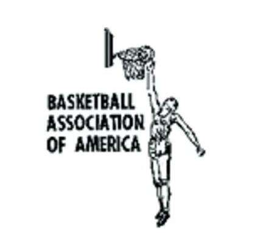
BAA由十一家冰球馆和体育馆的老板们共同发起成立，初衷是为了让体育馆在冰球比赛以外的时候不至于空闲冷场。这些体育馆的老板们对于经营体育场是行家里手，他们针对NBA“国家篮球联盟”的球队多集中在中西部地区一些中、小城市的现实情况提出一定要在当时的大城市内建立当地有名球队，建立一个全国范围的篮球组织的概念。在常规赛季中，每个联盟内部的球队要打两个主客场，和另一个联盟的球队要打一个主客场。最后按成绩好坏排队出进入季后赛的名次，只有进入季后赛才有希望夺得总冠军。BAA采用4节共48分钟制，人盯人防守并禁止联防。至今这些仍然是NBA区别于业余篮球的最基本特征。
BAA的发起人之一，波士顿花园体育馆的老板沃尔特・阿布郎同时提出新的职业篮球概念，即职业篮球必须有雄厚的财力支援，一名选手只能为一家俱乐部效力并要签订严格的合同，联赛还要建立选手储备制。这些理论贡献在于将巨额资金和法制制约引入篮球，为日后的NBA的发展奠定了高薪制和合同制这两大基石。
1949年，随着BAA吞并NBL后，为了避免可能引起的法律上的麻烦，正式改名为NATIONAL BASKETBALL ASSOCIATION，即NBA。
NBA历史十大球星
10.拉里伯德
拉里・伯德在1978年NBA选秀中于第1轮第6位被波士顿凯尔特人队选中，之后继续在大学就读一年，1979年正式进入NBA。在13年的职业生涯全部效力于波士顿凯尔特人队，新秀赛季当选NBA年度最佳新秀，职业生涯3夺NBA总冠军，3次荣膺NBA常规赛最有价值球员（MVP），2次荣膺NBA总决赛最有价值球员（FMVP），12次入选NBA全明星阵容并在1982年当选NBA全明星MVP，9次入选NBA最佳阵容一阵，1990年入选NBA最佳阵容二阵，3次入选NBA最佳防守阵容二阵，1986年当选年度最佳运动员，1986至1988年三年连庄NBA全明星三分大赛冠军
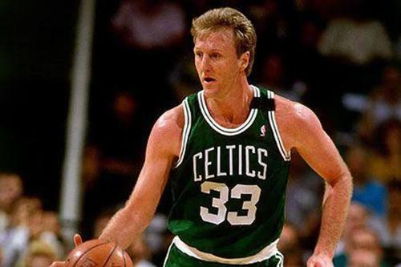
9.提姆邓肯
蒂姆・邓肯在1997年NBA选秀中以首轮第1顺位被马刺队选中。新秀赛季获选NBA年度最佳新秀；职业生涯五次夺得NBA总冠军；两次获选NBA常规赛最有价值球员（MVP）；三次获选NBA总决赛最有价值球员（FMVP）；十五次入选NBA最佳阵容（并列历史第一）；十五次入选NBA最佳防守阵容（历史第一）；十五次入选NBA全明星赛（历史第四）。
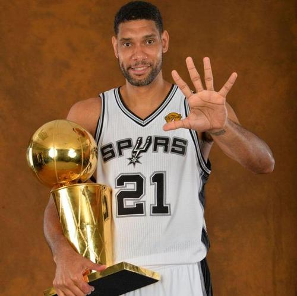
8.威尔特 张伯伦
威尔特・张伯伦的职业生涯曾效力于NBA费城/旧金山勇士队（现金州勇士队）、费城76人队以及洛杉矶湖人队；毕业于堪萨斯大学的他在NBA打球之前曾在哈林篮球队效力，之后被认为是NBA历史上具有统治力的球员之一。2次夺得NBA总冠军（1972年NBA总决赛MVP），4次荣膺NBA常规赛MVP，13次入选NBA全明星阵容（1960年NBA全明星MVP），10次入选NBA最佳阵容（7次一阵，3次二阵），1972-73年连续2次入选NBA最佳防守阵容一阵，1960-66年连续7次荣膺NBA得分王，11次荣膺NBA篮板王，1968年荣膺NBA助攻王。
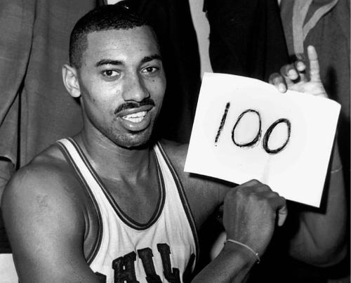
7.比尔 拉塞尔
1956年，比尔・拉塞尔在选秀大会上被圣路易斯老鹰队选中，在奥尔巴赫的一系列转会运作下加盟凯尔特人。在拉塞尔出任中锋期间，凯尔特人队在10个赛季中夺得9次总冠军，其中包括一个8连冠。1966年，拉塞尔成为NBA历史第一位黑人教练。在拉塞尔出任球员兼教练期间，再夺两次总冠军。在13年的职业生涯中，拉塞尔5次荣膺常规赛MVP，12次入选NBA全明星阵容并在1963年荣膺全明星MVP，3次入选NBA最佳阵容一阵，8次入选NBA最佳阵容二阵，4次荣膺NBA篮板王，1969年入选NBA最佳防守阵容一阵（此奖项1969年开始颁发）。
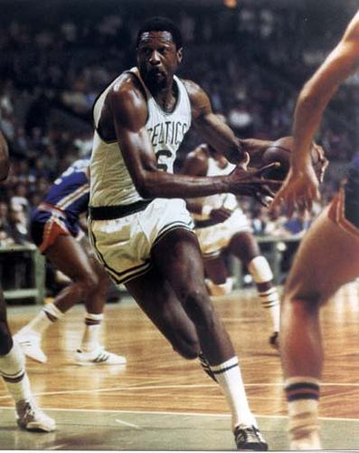
6.沙奎尔奥尼尔
沙奎尔・奥尼尔在1992年NBA选秀中于第1轮第1位以状元秀的身份被奥兰多魔术队选中，职业生涯曾效力于奥兰多魔术队、洛杉矶湖人队、迈阿密热火队、菲尼克斯太阳队、克里夫兰骑士队以及波士顿凯尔特人队，新秀赛季当选NBA年度最佳新秀，4次夺得NBA总冠军，2000年当选NBA常规赛MVP，3次当选NBA总决赛MVP（FMVP），15次入选NBA全明星阵容并3次当选NBA全明星MVP，8次入选NBA最佳阵容一阵，4次入选NBA最佳阵容二阵，2次入选NBA最佳阵容三阵，3次入选NBA最佳防守阵容二阵，2次当选NBA得分王
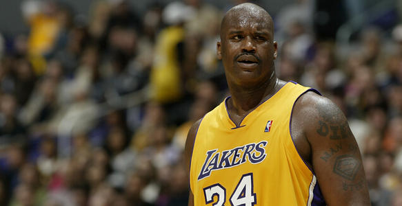
5.科比布莱恩特
科比是前NBA球员乔・布莱恩特的儿子。在1996年NBA选秀中，科比于第1轮第13位被夏洛特黄蜂队选中，后被交易至洛杉矶湖人队，整个NBA生涯都效力于洛杉矶湖人队。 科比的职业生涯随湖人队5夺NBA总冠军；荣膺1次常规赛MVP，2次总决赛MVP，4次全明星赛MVP；共18次入选NBA全明星阵容，15次入选NBA最佳阵容，12次入选NBA最佳防守阵容。 科比是NBA最好的得分手之一，生涯赢得无数奖项，突破、投篮、罚球、三分球他都驾轻就熟，几乎没有进攻盲区，单场比赛81分的纪录就有力地证明了这一点。除了疯狂的得分外，科比的组织能力也很出众，经常担任球队进攻的第一发起人。另外科比还是联盟中最好的防守人之一，贴身防守很具有压迫性。
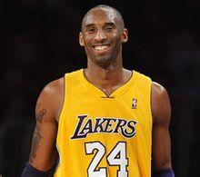
4.阿卜杜 贾巴尔
贾巴尔在1969年NBA选秀中于第1轮第1位以状元秀的身份被密沃尔基雄鹿队选中，新秀赛季当选NBA年度最佳新秀。1970-71赛季，贾巴尔场均31.7），获得常规赛MVP以及NBA得分王称号并率队夺得NBA总冠军。1976年转投洛杉矶湖人队，与有“魔术师”之称的埃尔文・约翰逊成为湖人队的两大支柱，率领球队五次夺得NBA总冠军。职业生涯6次荣膺NBA常规赛MVP，2次荣膺NBA总决赛MVP（FMVP），10次入选NBA最佳阵容一阵，5次入选NBA最佳阵容二阵，5次入选NBA最佳防守阵容一阵，6次入选NBA最佳防守阵容二阵，19次入选NBA全明星阵容，2次当选NBA得分王，4次当选NBA盖帽王。
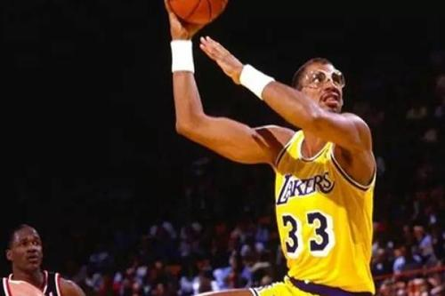
3.埃尔文约翰逊
埃尔文・约翰逊在1979年NBA选秀中于第1轮第1位以状元秀的身份被洛杉矶湖人队选中，职业生涯全部效力于洛杉矶湖人队。1980、1982、1985、1987以及1988年随湖人队五夺NBA总冠军。新秀赛季的他在首场季后赛即拿下“三双”数据，最终获得职业生涯的第一个总冠军并成为NBA有史以来最年轻的总决赛最有价值球员（20岁276天）。NBA生涯3次当选常规赛最有价值球员（MVP），3次当选NBA总决赛最有价值球员（FMVP），12次入选NBA全明星阵容（2次当选NBA全明星MVP），9次入选NBA最佳阵容一阵，1982年入选NBA最佳阵容二阵，2次当选NBA抢断王，4次当选NBA助攻王
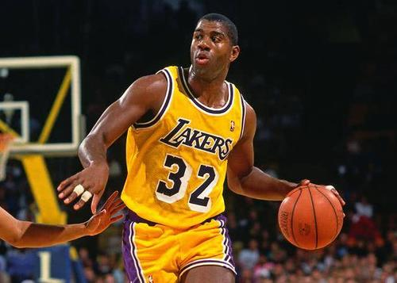
2.勒布朗詹姆斯
詹姆斯在2003年NBA选秀中于首轮第1顺位被克利夫兰骑士队选中，在2009年与2010年蝉联NBA常规赛最有价值球员（MVP）。2010年，詹姆斯转会至迈阿密热火队。2012年，詹姆斯得到NBA个人生涯的第3座常规赛MVP，第1个总冠军和总决赛MVP，并代表美国男篮获得了伦敦奥运会金牌，追平了迈克尔・乔丹在1992年所创的纪录。2013年，詹姆斯获得第4个常规赛MVP、第2个NBA总冠军和第2个总决赛MVP，实现两连冠。2014年，詹姆斯回归骑士。2016年，詹姆斯带领骑士逆转战胜卫冕冠军勇士获得队史首个总冠军和个人第3个总决赛MVP。2018年7月10日，詹姆斯正式与湖人签下4年1.53亿美元的合同。
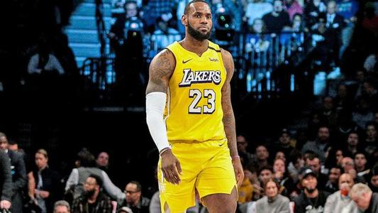
1.“篮球之神”迈克尔乔丹
迈克尔・乔丹在在1984年NBA选秀中于第1轮第3位被芝加哥公牛队选中，职业生涯曾效力于芝加哥公牛队以及华盛顿奇才队，新秀赛季当选NBA年度最佳新秀。1986-87赛季，乔丹场均得到37.1分，首次获得NBA得分王称号。1991-93赛季，乔丹连续2次荣膺常规赛MVP（1991、1992）和3次总决赛MVP（FMVP），率领芝加哥公牛队3夺NBA总冠军。1993年10月6日因父亲被害而宣布退役，两年后宣布复出。1996年入选NBA50大巨星。1996-98赛季，乔丹荣膺个人职业生涯第10次（共10次）NBA得分王以及第5次（共5次）常规赛MVP，并再次率领公牛队3夺（共6次）NBA总冠军，自己当选共第6次总决赛MVP。1999年1月13日在劳资谈判失败后再次宣布退役，两年后在华盛顿奇才队再次宣布复出。迈克尔・乔丹的职业生涯年年入选NBA全明星阵容（共14次）并3次当选NBA全明星MVP，10次入选NBA最佳阵容一阵，1985年入选NBA最佳阵容二阵，1988年荣膺NBA年度最佳防守球员，9次入选NBA最佳防守阵容一阵，3次荣膺NBA抢断王，2次夺得NBA全明星扣篮大赛冠军，1984年以及1992年夺得奥运会金牌。
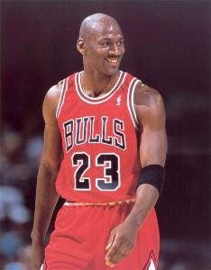